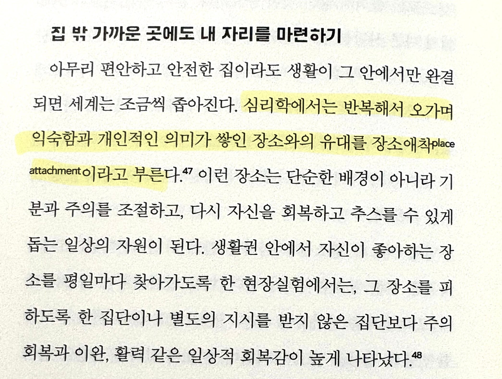

장소에도 애착이 생긴대
애착장소에 가면 엄청회복이빨리된다구함

장소에도 애착이 생긴대
애착장소에 가면 엄청회복이빨리된다구함
내 침대
걍 현관문밖이 싫엉..
난 개천가 공원인데
가면 내 나와바리 같은 느낌이라 편하고 좋은데
개가 똥싸거나 남들이 더럽게 쓰면
개 빡침 존나 빡침
패버려
향남 종합경기장에 앉아서 노을지는거 보며 시간 떼우곤했는데 이사가서 보질못함.
나는 주차한 뒤 내차..
출처
<혼자 살기 워크숍>
회복 빨리되는 애착장소 ..
난 게임속에 그런 장소가 있었지 ..
빰빰 빠바빰 이라는 노래도 나옴.